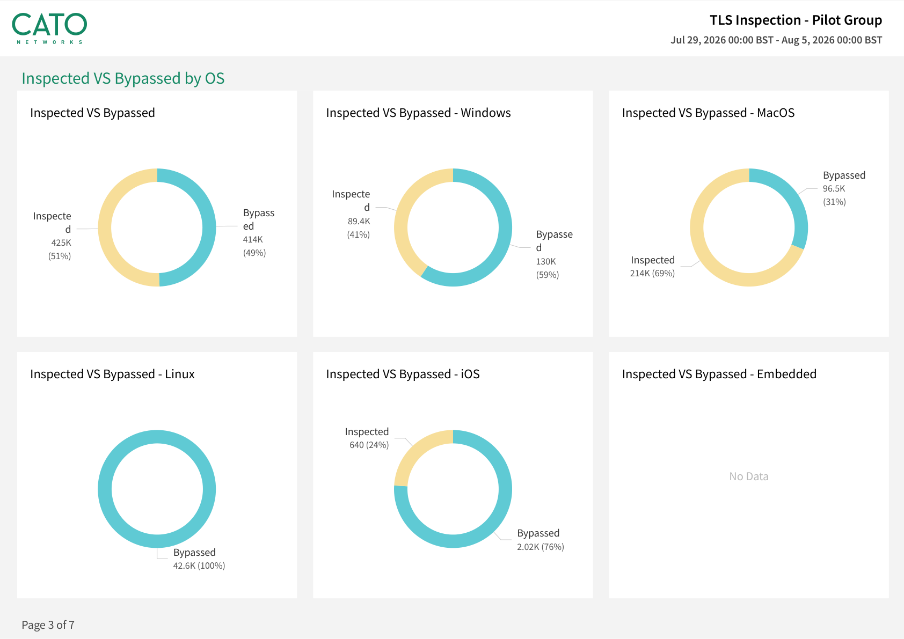

Why this matters
The overwhelming majority of enterprise traffic is now encrypted. Without TLS inspection, every engine that needs to see payload is limited to what the handshake exposes — a domain name and a certificate. In practice that means:
SWG loses category fidelity
URL filtering falls back to domain-level decisions. Full-path categorisation, file-type control and content-aware verdicts need the decrypted stream.
CASB loses granularity
Tenant restrictions and action-level controls (upload vs. view, personal vs. corporate instance) live inside the encrypted session, not in the SNI.
DLP is blind
Data protection cannot match content it cannot read. An encrypted upload of a customer database looks identical to an encrypted cat photo.
AI Security is blind
Prompt-level GenAI controls — what is being pasted into which assistant — only exist once the session is decrypted and inspected.
So the objective is not “turn on TLS inspection”. It is: reach high inspection coverage without an outage story that poisons the project. Cato’s own guidance is to start gradually — pilot user groups or test sites before full deployment — and the out-of-the-box policy direction is to inspect all HTTPS traffic by default, carving out only what genuinely cannot be inspected. Big-bang decryption fails not because inspection is hard, but because the estate contains a long tail of things that legitimately break under it. Staging is how you find them on your terms.
What breaks under decryption — and the documented handling
TLS inspection is a sanctioned man-in-the-middle: the PoP terminates the client’s TLS session, inspects, then re-encrypts towards the server. Four families of traffic object to that — each has a documented answer.
📌 Certificate-pinned apps
Some sites and applications pin their server certificate for security and refuse any other issuer — including Cato’s. The KB is unambiguous: these applications don’t work when TLS inspection is active, so you must add them as a bypass rule. Cato also maintains a built-in bypass list of known apps, applied automatically at the top of the rule base.
🪪 Mutual TLS / client authentication
Sites that require a client certificate (smart-card portals, some banking and government services) conflict with the man-in-the-middle model — the PoP cannot present the user’s client certificate. Documented handling: exempt them with a bypass rule, scoped as tightly as possible.
🧰 Legacy clients & dev tool stores
Installing the root certificate in the OS store is not always enough: Java SE keeps its own store (import with keytool), and IntelliJ and Git each manage their own trust. Firefox before version 120 needed a manual import (Settings → Certificates → Authorities); from 120 it can trust the OS store. Devices that can’t take a certificate at all — Android, Linux and unidentified OS — are bypassed by default rules you cannot edit.
⚡ QUIC sidesteps inspection
QUIC and GQUIC run over UDP and cannot be inspected like TCP-based TLS. Documented handling: the first time TLS inspection is enabled, Cato automatically creates Internet Firewall rules that block QUIC and GQUIC. Browsers then fall back to standard TLS over TCP 443 — where your inspection policy applies. Leave those rules in place.
“What percentage of your web traffic is actually decrypted today — and when your current gateway hit a pinned app or a QUIC flow, did anyone make a deliberate decision, or did it just silently pass through?”
The staged rollout
Every stage gates the next. Nothing is decrypted until certificates are verified; nothing expands until the pilot is quiet; nothing is enforced until the bypass list is deliberate and owned.
-
Deploy the root certificate fleet-wide — before anything else
Security → Certificate Management
Decide the trust anchor first: the default Cato certificate, or a private certificate / CSR signed by your own CA (only one can be active at a time). Download it in PEM or DER and push it to every managed device’s trusted root store — on Windows that is Trusted Root Certification Authorities — via your MDM/GPO/Intune/Jamf tooling (distribution mechanism is standard endpoint practice; the KB documents the per-OS manual installs, and the Cato Client installs the certificate automatically). Don’t forget the long tail: Java’s own store via
keytool, Git, IntelliJ, and Firefox builds before 120. -
Verify trust before you decrypt a single flow
Documented check: browse to an HTTPS site, open the padlock, and confirm the certificate issuer reads Cato Networks plus the PoP name (Chrome: “Issued by”; Firefox: “Verified by”). Do this on every device type and operating system the organisation uses — the KB is explicit on that scope. A device without the certificate experiences every HTTPS site, and every block page, as a browser security warning.
-
Let Cato block QUIC — and leave it blocked
Security → Internet Firewall
On first enablement of TLS inspection, Cato automatically creates Internet Firewall rules blocking QUIC and GQUIC, because they can’t be inspected. Keep them: browsers fall back to TCP 443, where the inspection policy actually applies. Removing them re-opens an uninspected side door.
-
Pilot: small cohort, limited categories, engines in monitor
Security → TLS Inspection
Use the documented pilot pattern: a Bypass rule with Source = Any, and above it an Inspect rule naming only the pilot users. Scope the inspect rule with the wizard’s high-confidence sets (Popular Cloud Apps, Cato-Recommended Domains, Malicious and Suspicious Categories) rather than everything at once. Recommended practice: keep the downstream engines (IPS, Anti-Malware, SWG categories) tracking rather than blocking for this cohort at first, so breakage surfaces as events, not outages. Pilot users work normally and log anything odd.
-
Expand category by category — and bypass deliberately
Add a category wave, watch, then add the next. When an app breaks — pinning, client authentication — use the documented answer: a narrow Bypass rule for that application, recorded with a reason and an owner. Device conditions (Platforms, Countries, Posture Profiles, Connection Origin) let you stage by estate segment too — e.g. inspect managed Windows and macOS first. Note the documented limitation: posture-profile conditions only apply to users connected with the Cato Client.
-
The enforcement flip
When a full wave has run quietly: widen the Inspect rule’s Source from the pilot group towards Any (the final implicit rule inspects all unmatched traffic), turn the downstream engines from monitor to block, and make the untrusted-server-certificate decision per inspect rule — the documented options are Allow (the default), Prompt the user, or Block. Recommended practice: tighten this as you mature rather than on day one.
-
Govern exceptions forever after
Administration → Audit Trail
The bypass list is now your attack surface. Recommended practice: every bypass rule carries an owner and an expiry date in its name or description, gets reviewed on a fixed cadence, and its changes are evidenced from the Audit Trail. A bypass without an owner is a finding, not a rule.

Breakage triage
Most rollout pain follows a small number of patterns. Triage by symptom before touching the policy — the fix for a missing certificate is very different from the fix for a pinned app.
| Symptom | Likely cause | Fix |
|---|---|---|
| Certificate warnings on every HTTPS site on one device | Root certificate missing from that device’s OS store | Re-push via MDM/GPO; verify the padlock shows “Cato Networks + PoP” as issuer before returning the device to an inspect scope |
| One app fails or hangs while the browser works fine | Certificate pinning — the app refuses any issuer but its own | Documented handling: add the application as a bypass rule (check whether it is already on Cato’s built-in bypass list) |
| Smart-card / client-certificate site rejects login | Mutual TLS — the PoP cannot present the user’s client certificate | Narrow bypass rule for that destination; record owner and review date |
Browsers fine, but git, Java or IDE builds fail on TLS errors |
Tool keeps its own trust store, separate from the OS | Import the certificate into the tool’s store (Java keytool; IntelliJ and Git per their own trust settings) |
| Warnings only in Firefox | Firefox pre-120 uses its own certificate store | Import via Settings → Certificates → Authorities, or move the fleet to Firefox 120+ which can trust the OS store |
| User sees a browser security error instead of the Cato block page | Blocked HTTPS site + no certificate: serving a block page over HTTPS requires the trusted Cato certificate | Install / verify the certificate — the warning becomes a clean block page |
| Traffic to some sites shows no inspection events at all | QUIC still reaching the internet over UDP 443, or a broad bypass rule matching first | Confirm the auto-created QUIC/GQUIC block rules are enabled; review bypass rule order — first match wins |
| Events show untrusted server certificates on inspected sites | Destination presents a self-signed, expired or otherwise untrusted certificate | Set the inspect rule’s untrusted-certificate action deliberately: Allow (default), Prompt, or Block |
TLS inspection issues rarely arrive as a wave on day one. They trickle in through change control for weeks — a finance app here, a build pipeline there — often reported without any mention of TLS. Book recurring diagnostic windows with the desk and app owners before each expansion wave, teach first-line support the triage table above, and tag every TLSi-suspected ticket so the pattern is visible. Slow-burn breakage that nobody connects to the rollout is how these projects lose sponsorship.
Policy workshop: how to run it
Open with the dependency, not the feature: “Every control we’ve shown you — SWG categories, CASB actions, DLP, GenAI governance — reaches full fidelity only on decrypted traffic. Here is how we get you there without breaking anything.”
-
Walk the rule base as shipped
Security → TLS Inspection
Show the ordered, first-match rule base and the two actions — Inspect and Bypass. Point out the default bypass rules pinned at the top (Android, Linux, unknown OS, plus Cato’s maintained application bypass list) that cannot be edited, and the implicit final rule that inspects everything unmatched. This is the “inspect by default, bypass by exception” posture.
-
Run the Configuration Wizard
Security → TLS Inspection
Click Start Review and walk the five recommended rules: Bypass Embedded Operating Systems, Bypass Sensitive Categories, Inspect Popular Cloud Apps, Inspect Cato-Recommended Domains, Inspect Malicious and Suspicious Categories. Customise, Apply & Continue through each, then Apply & Complete Review and Save. Message: the safe starting rule set is data-driven and takes minutes, not a services engagement.
-
Show the certificate options
Security → Certificate Management
Show the default Cato certificate alongside the private certificate / CSR option, the single active certificate model, expiry dates, and PEM/DER download — this is the artefact their MDM/GPO team distributes in stage 1 of the playbook.
-
Build the pilot scoping live
Security → TLS Inspection
Create the documented test pattern in front of them: a Bypass rule with Source = Any, and above it an Inspect rule naming a pilot group (e.g. “Priya” and the IT early-adopters). Open the Device column and show the conditions — Platforms, Countries, Posture Profiles, Connection Origin — as the levers for staging by estate segment.
-
Prove inspection in the browser
As a pilot user, open any HTTPS site and inspect the padlock: the certificate issuer reads Cato Networks plus the serving PoP. Then show a blocked HTTPS site rendering the branded block page — and explain that without the certificate this would be a scary browser warning instead.
-
Close on visibility and governance
Monitor → Events
Filter events for the pilot user: inspected sessions, bypassed apps, untrusted-certificate hits, QUIC blocks. Then show Administration → Audit Trail for policy-change evidence — the governance story that keeps the bypass list honest.
How to prove it in the customer's tenant
The demo walks the policy model; the PoV runs stages 1–4 of the playbook above on the customer's own estate, as evidence. The claim under test is precise: TLS inspection can be enabled on a defined pilot scope, reach a measurable inspection ratio, and break nothing the business runs on — while producing at least one verdict that only decryption makes possible. Agree the success criteria below before touching the policy, per Running a Cato PoV — and note the quiet payoff: if the PoV converts, nothing is thrown away, because the pilot is phase one of the production rollout.
| Success criterion | What we demonstrate | Evidence artefact | Where in the CMA |
|---|---|---|---|
| Certificate trusted on every pilot OS | On each device type in scope, the padlock on any HTTPS site shows the issuer as Cato Networks plus the serving PoP | Dated per-OS screenshots of the certificate check — evidence item zero | Pilot devices (browser padlock); cert served from Security → Certificate Management |
| Inspection ratio achieved on the pilot | The agreed share of the pilot group's inspectable HTTPS traffic is decrypted and inspected | TLS Inspection report: inspected vs. bypassed events per OS, top apps and domains by inspection status | Home → Reports (TLS Inspection template, filtered to the pilot) |
| Zero business-app breakage | After the exclusion baseline is in place, the final pilot week logs no TLSi-attributed helpdesk tickets — breakage surfaced as bypass rules, not outages | Tagged service-desk ticket query (zero rows) beside the dated bypass register | Monitor → Events (bypass hits) · customer service desk |
| A content-level verdict inside TLS | An EICAR test file over HTTPS downloads freely for an uninspected user and is blocked for a pilot user — or a DLP match fires on a decrypted upload | Before/after event pair: no verdict without inspection, block verdict with it | Monitor → Events (Anti-malware preset) · Monitor → Data Protection Dashboard |
| A documented exclusion list | Every bypass rule carries a reason and an owner; every change to the list is evidenced | TLS Inspection policy screenshot plus the matching Audit Trail entries | Security → TLS Inspection · Administration → Audit Trail |
- Scope: a pilot cohort of 5–20 named users (IT early-adopters are the classic) and/or a test network at one branch — with every operating system in the cohort listed up front, because certificate deployment and the achievable ratio both depend on it.
- Endpoint reach: the customer can push a root certificate to every pilot device — GPO into the Windows Trusted Root Certification Authorities store, Intune/Jamf profiles for macOS (the KB documents the per-OS manual installs; mass distribution is standard endpoint practice, and the Cato Client adds the certificate to the OS store on enrolled devices). Unmanaged and BYOD devices stay out of scope.
- Privacy sign-off: whoever owns privacy approves the inspect scope and the sensitive-category bypasses before any traffic is decrypted — not after.
- A content engine to prove the verdict: Anti-Malware enabled for the EICAR-over-HTTPS exhibit, or DLP configured if a data-protection match is the agreed proof — see Data Security with CASB & DLP.
- Identity: the pilot group syncing from the IdP, so the Inspect rule can name a group rather than a list of IPs.
Configuration walkthrough
-
Write the exclusion baseline before decrypting anything
Security → TLS Inspection
Run the Configuration Wizard and keep its bypass rules — Sensitive Categories (health, finance, government) and Embedded Operating Systems — as the floor of the exclusion baseline. Add any bypasses the customer already knows it needs (a smart-card portal, a pinned finance app), each recorded in the register with a reason and an owner. This baseline is what the "zero breakage tickets" criterion is measured after.
-
Deploy the root certificate — and verify it per OS
Security → Certificate Management
Choose the trust anchor (default Cato certificate, or a CSR signed by the customer's CA — only one is active at a time), download PEM/DER, and have the endpoint team push it: GPO to the Windows Trusted Root Certification Authorities store, MDM configuration profiles for macOS. Then verify on every OS in the cohort with the documented check — padlock → certificate → issuer reads Cato Networks + PoP. Screenshot each one, dated: that set is evidence item zero, and no device joins the inspect scope without it.
-
Enable inspection with the documented pilot pattern
Security → TLS Inspection
Switch on the Enable TLS Inspection slider, and build the KB's test pattern: a Bypass rule with Source = Any, and above it an Inspect rule naming the pilot group, scoped to the wizard's high-confidence category sets. Leave Untrusted Server Certificates on Allow (the default) for the pilot. Cato auto-creates Internet Firewall rules blocking QUIC and GQUIC on first enablement — leave them, so browsers fall back to inspectable TCP 443.
01 Bypass Sensitive Categories — wizard baseline, privacy-approved 02 Bypass Embedded Operating Systems — wizard baseline 03 Bypass Known pinned / mTLS apps — reason + owner on every row 04 Inspect Pilot group → Popular Cloud Apps, Cato-Recommended Domains 05 Bypass Any — everyone else, for now -- implicit final rule: Inspect Any — the production end-state
-
Run the baseline week — measure what would break, on your terms
Monitor → Events
There is no dry-run for decryption: the only honest preview of "what would break" is a small cohort actually being inspected while the downstream engines (IPS, Anti-Malware, SWG categories) stay in monitor/track — so incompatibilities surface as events and user reports, never as outages. Pilot users work normally and log anything odd; each confirmed breaker becomes a narrow bypass rule with a reason, which is exactly how the exclusion-list criterion earns its evidence.
-
Stage the pilot's category expansion
Security → TLS Inspection
Once the first wave is quiet, add a category wave to the pilot's Inspect rule — the same discipline the production rollout will use, demonstrated in miniature. If the estate mix matters, show Device conditions (Platforms, Countries, Posture Profiles, Connection Origin) as the staging levers; note posture-profile conditions apply only to Cato Client users.
-
Land the content-verdict exhibit
Monitor → Events
The KB's own test: an EICAR file fetched over HTTPS downloads successfully until TLS inspection is enabled — "download over HTTPS is only blocked after TLS inspection is enabled". Run it as an uninspected user, then as a pilot user, and show the pair in Events with the Anti-malware preset (see Testing Threat Prevention). If DLP is the agreed proof instead, trigger a match on a decrypted upload and read it from the Data Protection Dashboard. Either way, this is the artefact no handshake-only gateway can produce.
-
Generate the inspection-ratio report for the wrap-up
Home → Reports
Generate the TLS Inspection report template (one-off, or scheduled weekly into the PoV sync): inspected vs. bypassed events per operating system, top applications and domains split by inspection status, and counts per TLS certificate-error type (Generating TLS Inspection Reports). Filtered to the pilot users, this is the inspection-ratio criterion read straight off a chart — and the certificate-error section doubles as a health check on the cohort.
What good output looks like

The wrap-up needs three exhibits side by side: the report chart showing the pilot's inspected share climbing wave by wave, the before/after EICAR (or DLP) event pair, and the policy screenshot above next to a zero-row ticket query. Together they read as one sentence: we decrypted the agreed scope, we saw inside it, and nobody noticed.
Troubleshooting
Warnings on every HTTPS site on one device
The root certificate is missing from that device's OS store — Trusted Root Certification Authorities on Windows, Keychain on macOS. Re-push, re-run the padlock check, and only then count the device back into the inspect scope and the ratio.
Browsers fine, but Firefox / git / builds fail
Tools with their own trust stores: Firefox before 120 (import via Settings → Certificates → Authorities; 120+ can trust the OS store), Java via keytool, and git, npm, pip, curl per the KB's CLI tools guide. Expect this if developers are in the cohort.
One app fails while the browser works
Certificate pinning — the app refuses any issuer but its own, and the KB is unambiguous that pinned apps don't work under inspection. Check Cato's built-in bypass list first, then add a narrow bypass with reason and owner. In a PoV this is register material, not a failure.
Smart-card or client-cert portal rejects login
Mutual TLS: the PoP cannot present the user's client certificate, so the handshake fails by design. Documented handling is a tightly scoped bypass rule for that destination — record it, and flag it early if the customer runs card-authenticated government or banking portals.
Inspection ratio lower than expected
Check the denominators before the policy: Android, Linux and unidentified OS are bypassed by uneditable default rules, and disabled QUIC-block rules let UDP 443 slip past uninspected. Define the criterion against the pilot's inspectable traffic, then check bypass rule order — first match wins.
Browser security error instead of the block page
A blocked HTTPS site can only render the branded block page over a trusted Cato certificate — without it the user sees a raw browser warning and files a ticket that reads like breakage. Fix the certificate on that device; the scary warning becomes a clean, explained block.
Gotchas & clean exit
- "What would break" cannot be previewed from bypass mode: a bypassed flow tells you nothing about how it behaves decrypted. The measurement instrument is the pilot — inspect a small cohort with engines in monitor, and read the report's certificate-error counts. Set that expectation in the scope workshop.
- The ratio has a ceiling: default bypasses (Android, Linux, unknown OS, Cato's built-in app list) and the sensitive-category baseline mean 100% of all traffic is never the target. Write the criterion against the agreed inspect scope, or the wrap-up argues about arithmetic.
- Untrusted Server Certificates defaults to Allow: tightening to Prompt or Block is a documented per-rule decision for the production rollout's maturity curve — don't burn pilot goodwill flipping it in week one.
- Privacy is a stakeholder, not a setting: the wizard's sensitive-category bypasses are a floor. Works councils and regional privacy law can constrain inspect scope further — that conversation belongs before week one, per the framework page.
Exit: if the PoV converts, exit forwards — the certificate is deployed, the exclusion register is owned, and the pilot Inspect rule simply widens wave by wave per the playbook above; the PoV config is production phase one. If it does not convert, unwind cleanly: switch the Enable TLS Inspection toggle off (the QUIC-block firewall rules and any bypass rules can then be removed), retire the root certificate through the same GPO/MDM job that deployed it, and hand over the exclusion register and TLS Inspection report anyway — they are an audit of the customer's encrypted-traffic estate that outlives the evaluation, with Administration → Audit Trail as the record of everything added and removed.
Resources
Documentation
- Configuring TLS Inspection Policy for the Account
- Best Practices for TLS Inspection
- Using the TLS Inspection Configuration Wizard
- Testing TLS Inspection in the Cato Cloud
- Installing the Cato Certificate on Devices
- Managing Certificates for TLS Inspection
- Adding Device Conditions for TLS Inspection
- Certificate Warnings with Blocked HTTPS Websites